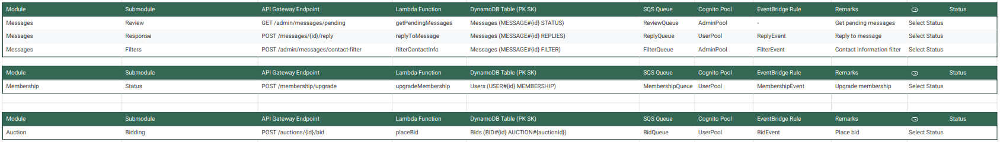

This week’s task revolves around managing and optimizing API integrations within an AWS-based system, focusing on Messages, Membership, and Auction functionalities. The work involves handling various API Gateway endpoints, ensuring that Lambda functions are correctly mapped, and verifying that data is properly stored and retrieved from DynamoDB. Throughout the week, the tasks involve testing API flows, debugging issues with Lambda executions, ensuring correct data persistence in DynamoDB, and monitoring event-driven workflows via EventBridge. Additionally, authentication must be properly managed using Cognito user pools (AdminPool, UserPool), ensuring the right access control. Progress tracking through the status selection feature will help maintain clarity on completed and pending tasks. By the end of the week, all integrations should be working smoothly, with a structured process for handling messages, membership upgrades, and auction bidding. The overall goal is to streamline backend operations, ensure data consistency, and improve system reliability for these core features.
As part of our onboarding and training at StraStan Solutions Corps, our team has been assigned to work on API gateway endpoints and their integration with AWS Lambda functions, DynamoDB tables, and other AWS services. Our primary focus this week is on two major modules: Messages, Membership, and Auction.

Understanding the Task
This week, my task focuses on managing API integrations across multiple modules, including Messages, Membership, and Auction. In the Messages module, I need to handle pending message reviews, process user replies, and apply content filters by interacting with API Gateway, triggering Lambda functions, and ensuring proper message queuing through SQS and EventBridge. For the Membership module, my responsibility is to manage membership upgrades, update user records in DynamoDB, and automate event-driven actions. In the Auction module, I will oversee the bidding system, ensuring that bids are processed correctly, stored in DynamoDB, and integrated with event-based triggers. Throughout the week, I will also debug issues, monitor system performance, and ensure seamless authentication using Cognito user pools.
For the Messages module, the tasks include implementing and refining features like reviewing pending messages, processing user replies, and applying content filters. This involves working with endpoints such as GET /admin/messages/pending and POST /messages/{id}/reply, ensuring that Lambda functions like getPendingMessages and replyToMessage function correctly. Additionally, messages must be queued properly in SQS (ReviewQueue, ReplyQueue, FilterQueue) while triggering necessary EventBridge rules (ReplyEvent, FilterEvent).
In the Membership module, the focus is on handling membership upgrades through the POST /membership/upgrade endpoint. The corresponding Lambda function, upgradeMembership, interacts with DynamoDB, updating the user’s membership status (USER#{id} MEMBERSHIP). This process also involves integrating SQS queues (MembershipQueue) and automating event-driven actions through EventBridge (MembershipEvent).
The Auction module requires setting up and validating the bidding system, ensuring that the POST /auctions/{id}/bid endpoint properly logs bids in DynamoDB (BID#{id} AUCTION#{auctionId}). The placeBid Lambda function needs to process requests efficiently, pushing them to the BidQueue and triggering BidEvent for further processing.
Throughout the week, the tasks involve testing API flows, debugging issues with Lambda executions, ensuring correct data persistence in DynamoDB, and monitoring event-driven workflows via EventBridge. Additionally, authentication must be properly managed using Cognito user pools (AdminPool, UserPool), ensuring the right access control. Progress tracking through the status selection feature will help maintain clarity on completed and pending tasks. By the end of the week, all integrations should be working smoothly, with a structured process for handling messages, membership upgrades, and auction bidding. The overall goal is to streamline backend operations, ensure data consistency, and improve system reliability for these core features.